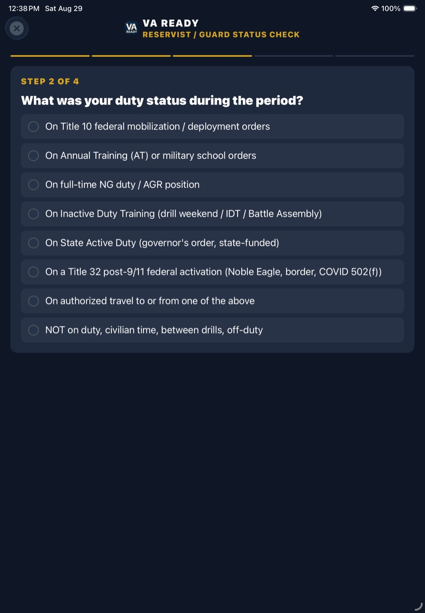
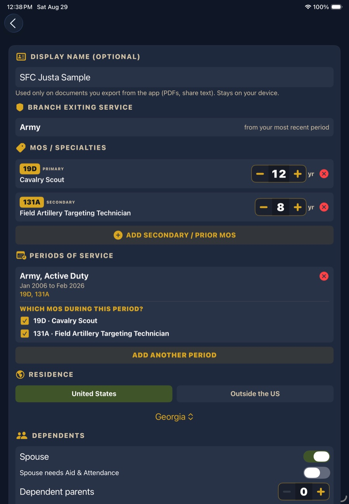

The rule that catches people out
For an active duty veteran, service connection is relatively simple: you served from this date to that date, and what happened in between happened in service. For Reserve and Guard veterans it does not work that way. Eligibility turns on the duty status you were in on the day it happened, and you may have moved between three or four statuses in the same year.
The core distinction under 38 CFR 3.6:
Put plainly: if you tore a knee on a drill weekend, that is claimable. If you were diagnosed with a disease that developed around drill, that is a much harder case, and often not a viable one on that duty status alone.
Duty status, and what it supports
| Duty status | What it is | Disease | Injury |
|---|---|---|---|
| Title 10 active duty | Federal mobilization or deployment orders | Yes | Yes |
| ACDUTRA | Annual Training, basic, military school | Yes | Yes |
| Full-time NG duty / AGR | Full-time Title 32 duty under 32 U.S.C. 316, 502 to 505 | Yes | Yes |
| INACDUTRA | Drill weekend, battle assembly, IDT | Generally no | Yes |
| State Active Duty | Governor's order, state funded | Generally not federal service | Generally not federal service |
| Authorized travel | Travel directly to or from the above | Follows the duty | Follows the duty |
Cardiac exception: an acute myocardial infarction, cardiac arrest or cerebrovascular accident during INACDUTRA, or during authorized travel to or from it, is treated differently from other diseases.
Work out which one applied to you
Free in the appFour questions, and it tells you which category your period falls into and what that means for a claim. It exists because "I was in the Guard for six years" is not an answer the VA can use, and most veterans cannot recall which orders they were under in 2011 without being walked through it.

Then record each period separately
Free in the appIf your record shows one span from your first enlistment to your last discharge, nobody reading it can tell which rule applies to what. A veteran who did four years Active Duty and then eight in the Guard has two different standards covering two different stretches, and they need to be visible as two things.

Every export the app produces then prints your service history as separate line items rather than one collapsed range, which is what lets a VSO or a rater apply the right rule to the right period.
What to gather if your claim is Guard or Reserve
- The line of duty determination, if one was done. For an injury on duty this is often the single most useful document you can produce
- Orders for the period in question, which establish the duty status the whole analysis rests on
- Point statements or retirement points, which help reconstruct which periods you served and when
- Sick call and treatment records from the drill or training site, not only your civilian records
- Buddy statements from people who were on that formation with you, on VA Form 21-10210, when the paperwork did not survive
Common questions
Does Reserve or National Guard time count for VA disability?
Some of it does, and which part depends on the duty status you were in that day. Under 38 CFR 3.6, ACDUTRA can support service connection for a disease or an injury incurred or aggravated in line of duty. INACDUTRA, your drill weekend, generally supports an injury only, plus an acute myocardial infarction, cardiac arrest or cerebrovascular accident. Title 10 federal active duty is treated as active service.
What is the difference between ACDUTRA and INACDUTRA?
ACDUTRA is full-time training duty: Annual Training, basic, a military school. INACDUTRA is the part-time duty most people call a drill weekend, battle assembly or IDT. The practical difference is large: a disease that began during ACDUTRA can be service connected, a disease that began during INACDUTRA generally cannot. An injury can be service connected in either.
I hurt my back on a drill weekend. Can I claim it?
Yes, an injury during inactive duty training is claimable. The obstacle is usually proof rather than eligibility: you want the line of duty determination, the sick call or treatment record, and ideally unit records placing you on duty that day. If instead you developed a disease noticed around drill, that is a different and much harder analysis, because disease is generally not covered under INACDUTRA.
Does State Active Duty count for VA disability?
Generally no. State Active Duty is ordered by a governor and funded by the state, so it is not federal service and sits outside the VA definitions in 38 CFR 3.6. State benefits or workers compensation may apply instead. Title 32 is different: state controlled but federally funded, and full-time National Guard duty under the cited Title 32 sections can qualify as ACDUTRA.
Why does the VA need my periods of service separately?
Because the rules change by period. Someone who served Active Duty and later joined the Guard has two eligibility standards applying to two stretches of time. If the record shows one date range, nobody can tell which rule applies to the condition being claimed. Recording each period with its branch, component and dates is what makes the rest of the analysis possible.
Next: how to document a claim → · see the 38 CFR criteria behind each rating →